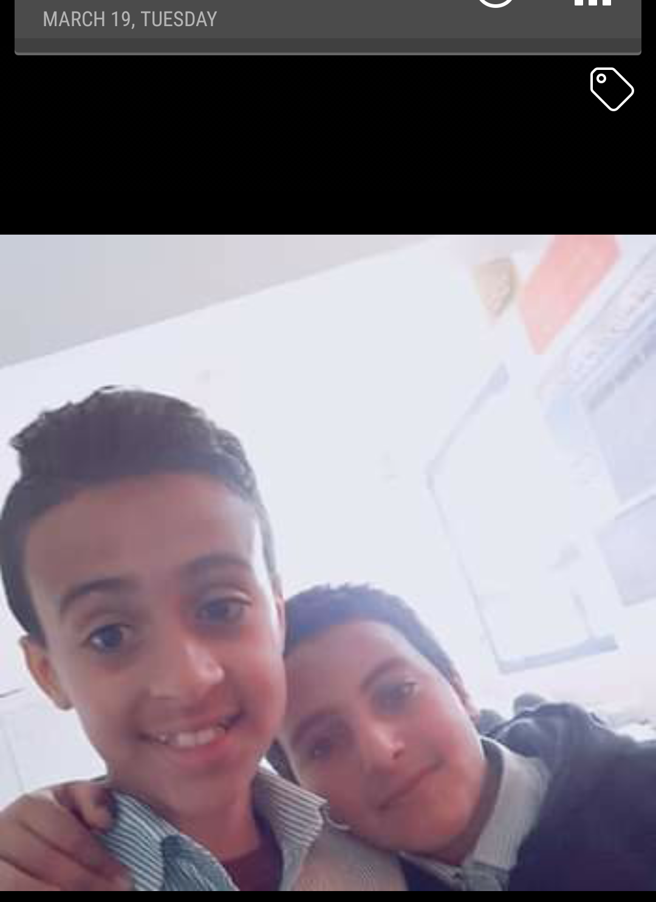
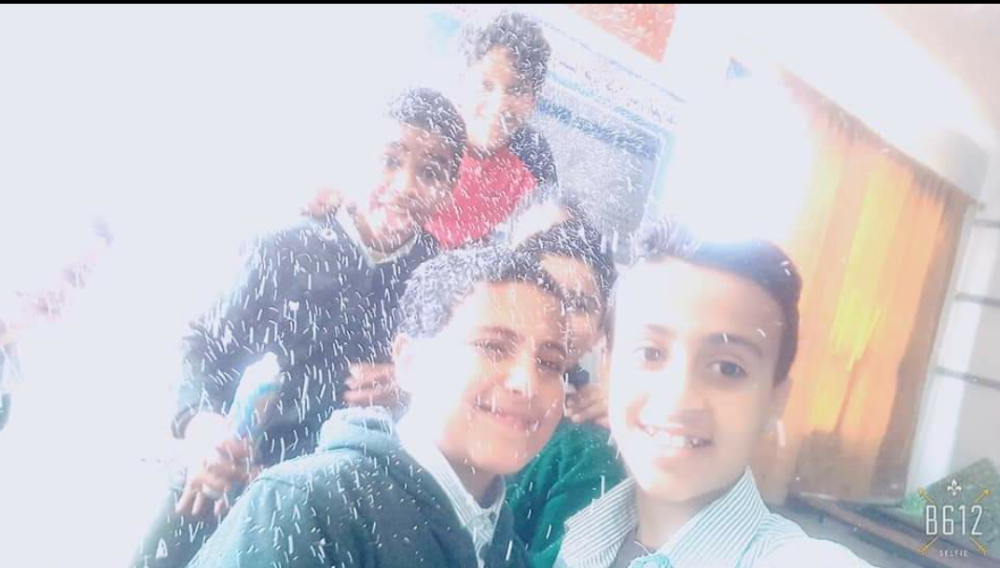
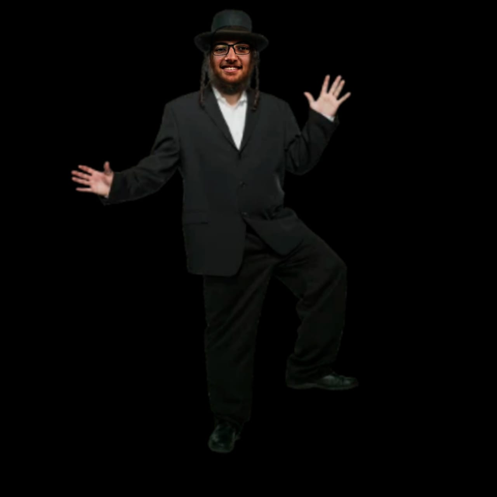
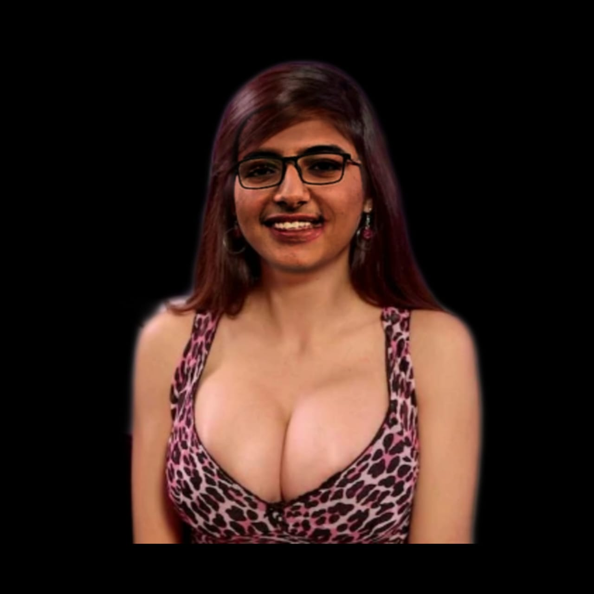

hello im mostafa
👄 ومن هنا اعتبرتو دكري وفحلي وكنت بحس بالامان وانا في حضنو
كمان بدايتي كانت لما مره كنا بنتصور صوره مع بعض واحنا صغيرين ولقيت حد فجاه راح مبعبصني بصراحه ساعته حسيت هقع من طولي واتبسط اوي
ومن ساعتها بقيت كدا الي يكيفني بروحلو في الساعه 200ولو عجبني وريحني م باخد فلوس
وبعد كدا الحكومه كانت عايزه تقبض عليا لحد ما هربت وروحت غزه الجيش مسكني هناك وبقيت بريح الجنود الاسراءلين وبعد كدا ودوني اسراءيل
✡وبقيت واحد منهم
وهناك قولت اخدم جيش بلدي واجاهد في جهاد النكاح وعملت عمليه وعملت سليكون
✡😍انتظرو الجزء التاني بعد ما ريحت رجالة تل ابيب كلهم